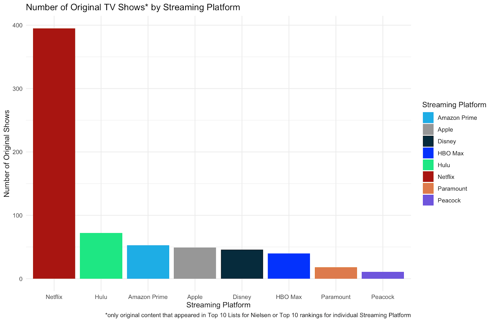
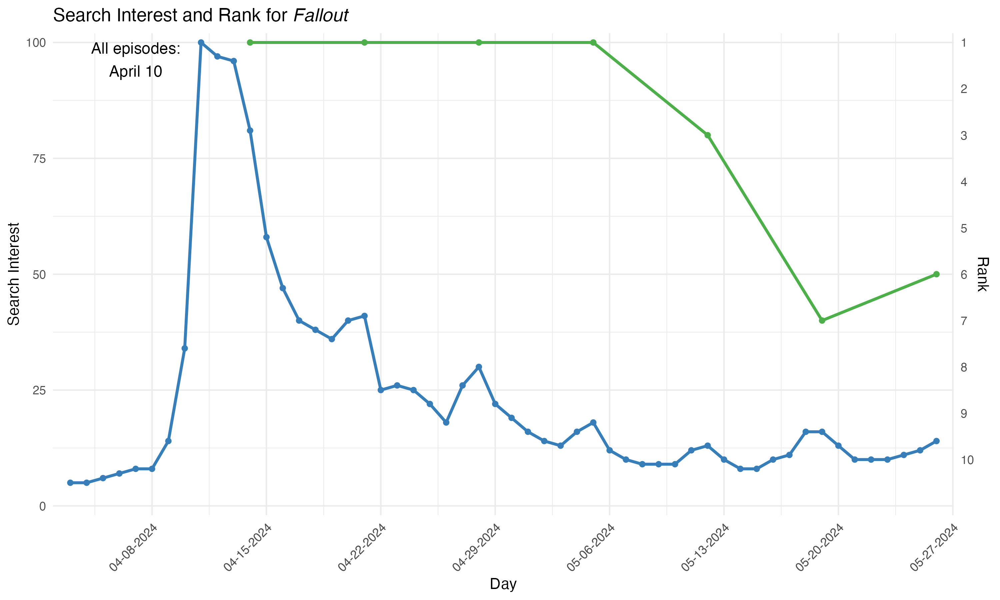
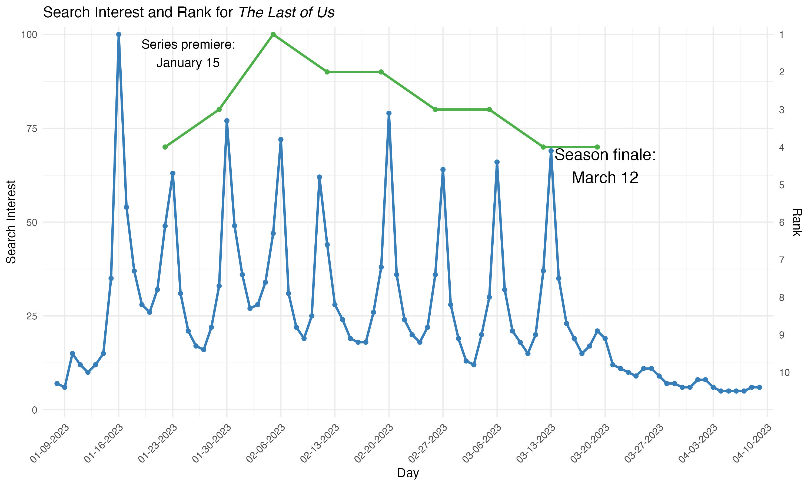
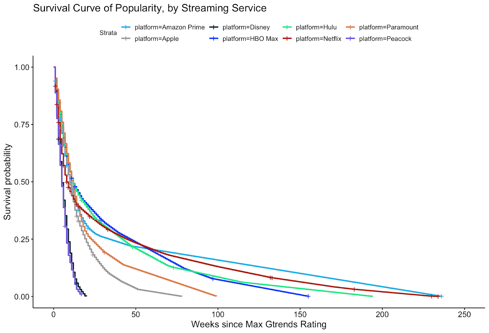
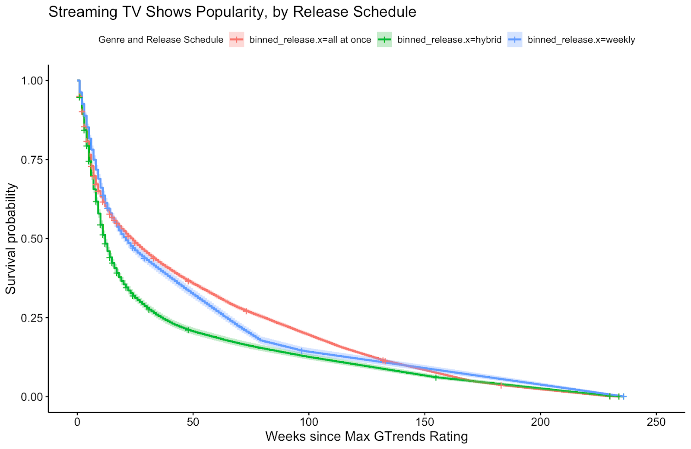
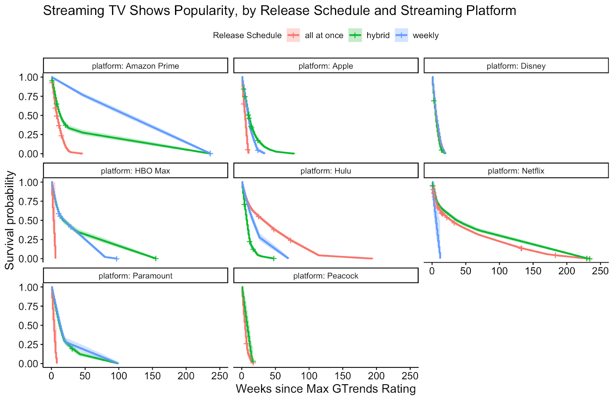

Introduction and Background
Binge-watching has been around for almost two decades, having been popularized by the availability (and accessibility) of TV shows like Grey’s Anatomy and Breaking Bad on streaming platforms like Netflix, Hulu, and Amazon Prime Video starting in the mid- to late 2000s. However, it really took off in 2013 when Netflix began releasing original content, starting with House of Cards and followed later that year by Orange is the New Black. Netflix started the practice of releasing all episodes of a season at once, a sharp departure from the standard weekly episodes. They continue to release most of their content this way, with a few exceptions (Love is Blind and season 3 of Bridgerton, notably). The public seemed to love it because they could watch at their own pace and didn’t have to wait a week after a mid-season cliff-hanger.
Shows like Succession, The Last of Us, and The White Lotus, all of which aired weekly on HBO at the same time they were released on HBO Max (later Max), created intense online discourse and reignited appointment television for an hour each Sunday. This provided not only a way for viewers to connect with each other, but also built momentum and caused the shows to stay in the public discourse for as many weeks as they aired.
As more streaming platforms came onto the market, so did more methods of releasing original content. While some shows are still released all at once (the “binge model”), many are released weekly, with some providing two or three episodes to start before transitioning to one episode a week. Some shows will also be released in batches of two episodes every week. For example, all 3 seasons of The Bear on Hulu have been released all at once, while season 1 of Shogun premiered with the first two episodes at once and then weekly.
With the rise of social media, platforms like Twitter became an important place to discuss TV shows with fellow viewers and get recommendations, later followed by TikTok. This project will seek to answer the question “Does the release schedule of a show (weekly, in parts, or all at once) impact their staying power?” Of particular interest is how shows perform on weekly Nielsen charts - both overall and by streaming platform - and their interest over time on Google Trends.
Background
Methods
In order to answer our question of interest, we had to gather a large amount of data from a wide number of various sources and databases. Unless mentioned otherwise, all of the data that was collected was data specifically about the US. Google Trends data and the ratings data all reflect the United States ratings and values; we decided to exclude worldwide ratings as we are most interested in the US Market.
Google Trends
Google Trends data was gathered for each show, movie, or special that appeared on any of the ratings lists that were collected. This data was gathered for a timeframe of the last 5 years for each show, regardless of when the show premiered in order to keep our data consistent. The data for each show was downloaded in a CSV file from the Google Trends website, with two columns: Date and Rating. The ratings are on a normalized scale, where 100 is equal to the point in time that the term was searched for most often, and 0 means that the term was not searched enough to crack the threshold.
The main issue to overcome was in getting the ratings associated with the show, as the show was not included in the CSV file. This was solved by naming each CSV file after the show or movie, and then adding a column of the file name so that we can match the ratings with the show titles.
In order to process such large quantities of CSV files, we organized them into folders based on the shows’ streaming platform. For example, the ‘Netflix’ folder contained the Google Trends CSVs for the shows Stranger Things, Bridgerton, and The Crown, among others. We then set up a function in R to loop over the folders of CSVs, which ingested all of the data, added the show’s name to the dataset as a new column, and then combined all rows together. Therefore, we were left with a single CSV of Google Trends data instead of hundreds of individual CSVs.
Nielsen Weekly Streaming Ratings
Nielsen weekly steaming ratings (see current week here) data was collected for as far back as they go, which is September 2020. Nielsen’s website only offers the most recent release, with no archive, so they were gathered from Variety articles (example) or the TV Grim Reaper on Twitter/X (example). We specifically gathered the Top 10 data for Original Content; as we are mainly interested in how a streaming show’s release schedule influences its popularity, information on acquired shows that were released in other means was not information that we were interested in.
The biggest challenge that we encountered in processing the Nielsen Weekly Streaming data came from the form that the data was collected in. We were unable to find a CSV download for the Nielsen data (that we wouldn’t have to pay for), so we took screenshots of the Nielsen Top 10 Weekly data. Each screenshot contained the following information: the week that the ratings were from, show rank (1-10), the show’s name, the show’s SVOD Provider (streaming platform), the total number of episodes of the show, and the number of minutes that the program was watched in the past week.
As we had over 190 screenshots of Nielsen data, we did not wish to process this data manually. As such, we looked for ways to process these screenshots using programmatic means. A few APIs were tested to determine which could process the data the most successfully, with AWS being the best. All the images were fed through the Amazon Textract tool and downloaded as ZIP files, which contained a CSV. R was used to unzip the folders, clean the data, and merge the files together into a single CSV file. This CSV contained all of the weekly Nielsen data that was collected, with a column for the date of the rankings in order to keep each week separate.
TV Grim Reaper Weekly Streaming Ratings
In addition to Nielsen’s overall ratings that encompass all of the major streaming platforms, Nielsen also releases weekly top 10 ratings for each streaming platform. The Nielsen top 10 lists for individual streaming platforms came from the TV Grim Reaper on Twitter/X (example). The TV Grim Reaper posted these screenshots starting from around June 2023 to April of 2024, so we have roughly one year’s worth of data to work with.
In total, we gathered ratings for the platforms: Amazon Prime Video, Apple TV+, Disney+ and Hulu. We did not gather data for Netflix (see next section), and did not gather data for Peacock or Paramount+ as these platforms’ top 10 data was not captured by the TV Grim Reaper and we were unable to find any alternative means of collecting this data.
Screenshots were taken of each tweet, and like the Nielsen weekly ratings, were then fed through the Amazon Textract API from AWS. R was again used to unzip the folders, clean the data, and merge the files together (one for each platform).
Netflix Weekly Top 10 Streaming Ratings
The reason that we did not gather Netflix Top 10 data from the TV Grim Reaper is because Netflix is the only streaming platform that offers a CSV download (link) of its entire Weekly Top 10 history (starting from August 2021 - present day). This was very beneficial to us, as it not only covered a longer period of time than the TV Grim Reaper ratings did, but it also came in a CSV download with all of the key variables and information that we were interested in, such as date, ranking, and show name.
FlixPatrol Yearly Streaming Ratings
FlixPatrol is a movie and TV ratings compiler that provides an API to get lists of ratings, with options to filter by show type, streaming platform, countries, years, and many more options. We gathered the yearly ratings for the eight main streaming platforms that we are analyzing (Amazon Prime, Apple TV, Disney +, HBO Max, Hulu, Netflix, Paramount+, Peacock) for the years of 2021-2024 (which overlaps with our weekly streaming ratings data). We had no real issues getting these into a good format as the API allowed for specifying which columns we were interested in (show, platform, rating, and date), and offered CSV downloads of our queries.
Show Release Information
One of the main components of our project involves the release schedule of individual shows. To obtain this information, we compiled a list of all the shows we had data for, and using Wikipedia articles for each platform (example), got the number of seasons for each show, as well as the release schedule for each season.
We binned the releases into three separate categories: all at once, hybrid, and weekly. All at once shows were shows whose entire seasons were released all at the same time. Weekly shows were shows whose episodes were released at a rate of one per week. Hybrid shows were shows whose episodes were released in some combination of all at once and weekly. A good example of this is the first season of Ted Lasso. The first three episodes were released all at once, and then the rest of the season was released at a rate of one episode per week.
We had to organize the show release by season because there are some shows, such as Bridgerton, whose release schedule changed over the course of the show’s lifetime. Seasons 1 and 2 of Bridgerton both released their entire seasons all at once, whereas Season 3 of Bridgerton released in two four-episode batches. As such, it would be misleading to classify Bridgerton as either a strictly ‘all at once’ or strictly ‘hybrid’ release schedule. Therefore, we decided to include each individual season to account for these scenarios of release format changes.
An argument can be made that Wikipedia’s information could be inaccurate. However, it was the only source that we could find that contained the release information for each individual episode of a show, whereas other sources would only contain when the season was released. Meaning, these sources would not tell us if a show was released weekly, all at once, or in a hybrid format. Furthermore, Wikipedia’s community of editors actively works to correct errors and ensure accuracy, especially within heavily trafficked articles such as popular TV shows. As such, after weighing the pros and cons, we decided we were comfortable with the potential risks of inaccuracy and decided to proceed with Wikipedia as a source of reliable information.
We additionally gathered whether the show was original content to the streaming platform or acquired content from a third party source. As we are most interested in the release schedule of streaming shows, acquired shows’ release schedules did not pertain to our questions of interest and as such, we excluded these shows from our analysis.
Show Genre and Language Information
Another variable we were interested in was the genre of a show, and how the show’s genre can affect its popularity. To gather this information, we once again turned to Wikipedia. The show genres that are listed on Wikipedia can be extremely specific, such as the genre for the Amazon Prime Video show Gen V being listed as ‘superhero teen drama’. As one can imagine, that was the only show in the entire dataset that had that specific genre. Therefore, we knew that using the genres as they were listed on Wikipedia would not be sufficient for our needs and decided to bin the genres into their main categories.
We decided to bin the shows into three different genre categories: drama, comedy, and docuseries. Any show whose genre included the word ‘comedy’, ‘drama’, or ‘docuseries’ was put into its respective category. From there, we were left with a large list of genres that we classified into the bins based on how we felt they best fit. For docuseries, we included any genre that was non-fiction or depicted real world events. This included true crime documentaries, reality competition shows, and game shows. For drama, we included any genre that was classified as a genre that is typically dramatic, such as horror, thriller, and telenovela. For comedy, we included any genre that is typically lighthearted, such as sitcoms, children’s shows, and mockumentary.
One important caveat: each show was classified as one of the three genre categories with only one exception. There is a small subset of shows in the dataset whose genre lists both Comedy and Drama, such as the show The Bear. The Bear’s genre was listed as ‘comedy drama’, and as such, it felt disingenuous to assign the show to a single bin. Therefore, if a show’s genre specifically had both of the words ‘comedy’ and ‘drama’, we classified the show as both a comedy and a drama. As we were essentially duplicating these shows, we separated the binned genres into a different table in our database so we don’t have duplicate shows in the shows table and can maintain having a single row for each show in our shows table.
We also gathered information on the language of the show. As mentioned above, we only collected the ratings for the US specifically, but as we know, the US is a melting pot of different cultures and backgrounds. This meant that there were a small, but not insignificant number of shows in our dataset that are in a foreign language. So we decided to also gather language data from Wikipedia while we were gathering the genre information.
Data
We decided to store our data in 3NF, and as such, assigned unique ID numbers to each show and streaming platform in the ratings. The most time consuming and tedious part of the project was in getting all of the show titles in a consistent format so that we could assign them all IDs. Many shows were listed in multiple different ways in the various ratings; for example, the Netflix show ‘Formula 1: Drive to Survive’ was in the datasets as ‘Formula 1: Drive to Survive’, ‘FORMULA 1: DRIVE SURVIVE’, and ‘Formula One: Drive…’. This was true for many of the shows in the various datasets, so in order to ensure consistency for joining purposes, we went through the datasets and set each show name to a consistent format. This ended up being a pretty considerable effort, taking a few days’ worth of work to complete. But once we were finished, we were able to easily and consistently join our datasets together and change the show names to show ids.
The way that we structured our database tables is shown in the ERD Diagram of Figure 1.

Figure 1: ERD Diagram of Database Design and Structure
We use the show_id as our main connecting piece, allowing us to connect our shows table with the various ratings tables, the gtrends table (containing Google Trends data), and the releaseinfo and binned_genres tables.
Instead of having unique Primary Keys for each table, we primarily use compound keys as unique identifiers for each of our tables. Only the shows and platforms tables have single value primary keys. Every other table has a compound primary key. The compound keys were chosen to have a unique identifier that we could use to identify each row. For example, the netflixtop10 table’s compound key consists of the show_id, date, and season_title. This is because Netflix’s Top 10 data breaks down a show by season, so a single show could appear on the same week’s top 10 list multiple times. An example of this is Bridgerton. The Netflix Top 10 list for the week of June 6, 2024 contains Bridgerton Season 3, Bridgerton Season 2, and Bridgerton Season 1. As such, a compound key of just the show_id and date would not create a unique compound key. Therefore, season_title was also included to differentiate between the different seasons of a show.
The season_number was included in the compound key of the releaseinfo table for similar reasons; as the release schedule for a show can change over the lifetime of the show, we needed to include the season_number to the compound key alongside the show_id to ensure that each row had a unique identifier.
Most of the other tables such as gtrends, reaperratings, yearlyratings, and nielsenratings use a compound key of just the date and show_id as they do not differentiate between seasons, and therefore each show would have at maximum one data point per week, making our compound keys unique for these tables.
The binned_genres table required including both the show_id and the binned_genre as part of the compound key. This is due to the fact that, as mentioned in the Show Genre section, there are a small number of shows whose genre listed both ‘comedy’ and ‘drama’, and as such, we classified them as both. Therefore, within the binned_genres table, there are a few show_ids that are repeated, so we must additionally include the binned_genre column in our compound key to ensure that each row is unique.
Results
Descriptive Statistics
After gathering all of the data we listed above, we ended up with a dataset that totalled 650 TV shows that were original content on a streaming platform. The breakdown of the shows by streaming platform is in Figure 2.

Figure 2: Breakdown of shows in dataset based on Streaming Platform
Looking at the breakdown of shows, it is clear to see that Netflix has considerably more shows in the dataset than any other streaming platform; in fact, it has more than all other platforms combined. This is due to two main reasons. First, Netflix’s Weekly Top 10 data covers a timeframe of 3.5 years, whereas the other platforms Weekly Top 10 data covers around 0.75 years. Therefore, we have an additional 2+ years worth of data for specifically Netflix shows than the other streaming platforms, leading to more shows. Second, Netflix is the most popular streaming platform, and as such, both has the funding to make much more original content than its counterparts and dominates the combined streaming ratings on Nielsen. According to DigitalTrends, Netflix has 270 million monthly subscribers, whereas Hulu, Max, Paramount+, and Apple TV+ all have under 100 million subscribers (Nickinson, 2024). That large of a difference in revenue allows Netflix to create more original content than its competitors. Additionally, as we were only gathering data for shows that appeared on a top 10 list, Netflix’s large subscriber base helped them dominate the Nielsen rankings.
The breakdown of shows by binned genre is as follows (Figure 3).

Figure 3: Breakdown of shows in dataset based on binned genre*
*includes the shows that were classified as both comedy and drama as described in Show Genre
The distribution of shows by genre is relatively straightforward and makes sense. Initially, we were surprised by the comparatively low number of comedy shows compared with drama and even docuseries shows. However, we realized that this was due to the fact that the only shows whose data we gathered were shows that were present on a Top 10 Ranking. And as the majority of critically acclaimed TV shows are dramas in some capacity, this difference in genre counts makes sense based on our data collection methods.
The breakdown of shows by their release schedule is shown in Figure 4.
Figure 4: Breakdown of shows in dataset based on release schedule*
*the shows whose release schedule changed were classified as ‘Changed’ on this graphic
The breakdown of shows is heavily skewed towards the ‘all at once’ shows. This is mainly due to the dominance of Netflix. Breaking down the release schedules by streaming platform paints a very clear picture (Figure 5).
Figure 5: Breakdown of shows in dataset based on release schedule and streaming platform*
*the shows whose release schedule changed were classified as ‘Changed’ on this graphic
As Figure 5 shows, Netflix is far and away the reason why ‘all at once’ shows dominate the dataset, having over 300 shows with that release schedule. The other streaming platforms have much more of an even distribution, but we will need to be cognizant of the Netflix domination during our analysis.

Figure 6: Search interest (daily, based on Google Trends) and Nielsen ranking (weekly) for Fallout, starting one week before it was released and going until it fell off the Nielsen rankings

Figure 7: Search interest (daily, based on Google Trends) and Nielsen ranking (weekly) for The Last of Us, starting one week before it premiered and going until four weeks after the finale. Nielsen ranking is just for HBO Max and does not include the television channel
Figures 6 and 7 highlight the Google Trends search interest and placement on the Nielsen top 10 streaming rankings for two streaming TV shows, both post-apocalyptic dramas based on video game franchises. Fallout was released in full on Prime Video on April 11, 2024. The Last of Us premiered on HBO (simulcast on HBO Max) on January 15, 2023 and ran until March 12. Fallout was on the Nielsen rankings for 7 weeks, spending 4 of those at #1 before falling to #7. The Last of Us was on the Nielsen rankings for 9 weeks, spending just one week at #1, but fell no farther than #4. Interest for both shows peaked when they premiered, but by a week later interest in Fallout had fallen and it was half as popular; it continued to fall, although showing small peaks. Interest in The Last of Us jumped weekly as new episodes aired, not dipping below the halfway mark until almost a week after the finale.
Survival Analysis
As our main questions of interest involve determining how factors such as a show’s release schedule, genre, and streaming platform can affect the show’s ‘staying power’, we decided that using survival analysis would be an ideal path to answer these questions.
First and foremost, we needed to identify a way to calculate a show’s staying power. To do this, we decided to use Google Trends data. As we have Google Trends data for each show going back over the last 5 years, we determined that using Google Trends to be a proxy for a show’s staying power would be ideal. As a reminder, Google Trends data is normalized on a scale from 0 to 100, with 100 being equal to the time during the past 5 years when the TV show was searched for most often. To calculate the show’s staying power, we decided to look at the number of weeks that it took for a given show to go from a GTrends rating of 100 (the maximum possible rating) to a rating of 0 (the minimum possible rating). This number essentially determines how long a show ‘survived’ in the public sphere. The great Ernest Hemingway was quoted as saying “Every man has two deaths, when he is buried in the ground and the last time someone says his name.” (Hemingway). In our minds, every show has two deaths, when the last episode airs and the last time someone searches for its title on Google.
Streaming Platforms
We first decided to look at the show’s streaming platform, to see if that had any significant impact on the length of time of a show’s popularity (Figure 8).

Figure 8: Kaplan-Meier curve of how many weeks shows took to go from maximum GTrends rating (100) to minimum GTrends rating (0), based on their streaming platform
As the Kaplan-Meier curve in Figure 8 shows, there is some difference between the streaming platforms. Shows on Netflix are still surviving past the 200 week mark, whereas shows on platforms like Disney+, Hulu, and HBO Max die out at around the 100 week mark. Paramount+ looks like by far the worst streaming platform for popularity, not even making it to the 25 week mark. However, this can be explained by a few reasons. First, there are a very small number of shows from Paramount+ in the dataset, and as such, each show has a disproportionate impact on the analysis. Second, and perhaps most importantly, this sort of analysis hurts very recent shows. For example, let’s assume that a show in the dataset was released one week prior to our data collection. Even if the show ended up being the new cultural zeitgeist ala Game of Thrones or Breaking Bad, the show would still only have a survival time of one week due to when the data was collected.
To determine the statistical significance of the survival times by genre, we ran a log rank test. Running the log rank test gave us a p value of <2e-16. As such, we can say with confidence that there is a statistically significant difference in how long a show’s popularity is sustained based on the streaming platform.
Genre
Next, we wanted to look at the genre of a show and how genres affected the shows’ staying power (Figure 9).

Figure 9: Kaplan-Meier curve of how many weeks shows took to go from maximum GTrends rating (100) to minimum GTrends rating (0), based on their genre
This Kaplan Meier curve tells some interesting stories. First, comedy and drama both have a nearly identical survival curve from 0 weeks to around the 50 week mark. The difference between the two is only pronounced once we pass the 50 week mark, where drama shows are typically more popular in their later years than comedy shows. But perhaps the most interesting curve of all is the docuseries curve. Docuseries quickly fall behind, being the worst performing of all genres from 0 to 50 weeks. But between 50 and 100 weeks, docuseries actually overtakes the other genres and has its popularity sustained for almost 50 weeks longer than drama and comedy shows. This paints an interesting picture: docuseries are the most difficult shows to get off the ground, but are the easiest to sustain the popularity of. This makes sense when thinking about how the shows are made.
With a drama or comedy series (i.e. fictional shows), there must be a team of writers constantly working on writing new episodes and trying to keep things fresh and interesting while crafting an overall narrative arc. This is a very effort-intensive and time-consuming activity that is very hard to sustain over a long period of time. On the other hand, docuseries often can recycle the same ideas over and over again with new individuals. For example, one show in the docuseries category is the dating show Love is Blind. What is really different from one season to another other than the contestants? The format is the same, the show’s structure is the same, they just swap out the old contestants for new contestants. This difference makes sustaining a docuseries much easier than sustaining a drama or comedy show.
We ran a log rank test on our genre Kaplan-Meier curve as well, and this test resulted in a p value of 0.008. As such, we can say that genre, while not as much of a factor as streaming platforms, absolutely plays a significant role in the sustained popularity of a given show.
We then fit a parametric model to this survival curve. We created a Weibull model and overlaid the resultant model predictions onto our survival plot (Figure 10).
Figure 10: Weibull Model of Survival Probability by Genre overlaid on KM Curve of Survival Probability by Genre
In Figure 10, the dotted line represents the observed survival time in the dataset, and the bold line represents the predicted survival times by our Weibull model. When creating our Weibull model, we decided to stratify by genre in order to ensure that each curve was as accurate as possible. Looking at the p values for each genre in our model, we have the following table (Figure 11).
| Genre | P Value |
|---|---|
| comedy | 5.78e-9 |
| docuseries | 5.49e-19 |
| drama | 1.77e-8 |
Figure 11: P Values of each genre category in Weibull Model of Survival Probability by Genre
This confirms that each genre is statistically significantly different in their survival probabilities.
Show Release Schedule
Finally, after seeing how a show’s streaming platform and genre can affect their staying power, we decided to look into the survival probabilities of the different release schedules (Figure 12).

Figure 12: Kaplan-Meier Curve showing Survival Probabilities of shows based on their genre
This graphic provides some interesting insights. First, shows with weekly releases start out less popular than its all-at-once and hybrid counterparts, trailing behind them for the first 40 weeks. However, weekly releases then overtake the other two release types, and sustains that lead from around week 50 to week 100. This result is in line with our hypothesis that weekly releases are only ideal for shows with preexisting fanbases and are not ideal for newly released shows without a preexisting fanbase.
Another interesting insight of this graphic is the difference between all-at-once and hybrid. The two curves are virtually identical up to around the 45 week mark, at which point they diverge, with all-at-once shows having a higher survival probability from week 50-150. But interestingly, the two divergent lines converge again at the 150 week mark. This is interesting behavior, and something that we have been unable to come up with a reasonable explanation for.
Running a log rank test on the release schedules gives a p value of 0.0149. This is statistically significant, but interestingly, it is the least statistically significant of all of the factors we have evaluated up to this point, with genre and streaming platform being much more significant factors. As such, we wanted to see how the combination of release schedule with these other factors influenced their survival probabilities.
Show Release Schedule and Genre
We first decided to look at the combination of show release schedule with show genre (Figure 13).

Figure 13: Kaplan-Meier Curve showing Survival Probabilities of shows based on their genre and release schedule
This graphic offers some interesting insights that the survival curves for genre and release schedule alone could not offer. It is apparent that every release type is not appropriate for every single genre. Docuseries and Comedy shows that are released weekly die out in popularity extremely quickly, whereas weekly Drama releases last significantly longer. Focusing more on comedy, we can see that Comedy shows that have hybrid release schedules also perform significantly worse than Comedy shows that have an all-at-once release schedule. Therefore, we can say with confidence that Comedy shows with all-at-once release schedules are far more likely to sustain their popularity over an extended period of time.
Additionally, whether docuseries are released in a hybrid or all-at-once schedule does not seem to have a large effect on the sustained popularity of the show, as both curves have very minor differences throughout the 200 week timeframe. Releasing a docuseries weekly is not a good idea based on the graphic; however, it is important to note that there is a very small number of docuseries with weekly releases and their impact on the curve is disproportionate compared to other genre + release schedule combinations with a larger number of shows within.
Drama is perhaps the most interesting genre to look at in this graphic, as there is not a large amount of variation between the survival times of the three different release types. All three genre + release schedule combinations all survive to right around the 150 week mark.
Performing a log rank test on the survival curves gives a p value of <2e-16. Therefore, we can say with confidence that the combination of release schedule and genre is statistically significantly impacting the length of time that a show sustains its popularity.
Show Release Schedule and Streaming Platform
We finally wanted to look at the survival probabilities of the different release schedules for each individual streaming platform (Figure 14).

Figure 14: Kaplan-Meier Curve showing Survival Probabilities of shows based on their streaming platform and release schedule
First and foremost, it’s clear to see that not all streaming platforms subscribe to the three different release categories. In fact, only half of the platforms analyzed had shows in all three release categories, and three platforms (HBO Max, Paramount+ and Peacock), only had shows represented from a single category.
For the platforms that had shows released in all three categories, interestingly, the ‘ideal’ release schedules were different for basically every platform. For Apple TV+, weekly released shows sustained their popularity longest; for Hulu and Netflix, shows with hybrid release schedules sustained their popularity longest; and for Disney+, shows released all-at-once sustained their popularity longest. This offers some interesting insights into what release schedule the various streaming platforms think is the best for building up a show’s popularity.
As with our other Kaplan-Meier curves, we performed a log rank test to determine if the results that we are seeing are in fact statistically significant. The log rank test gave us a p value of <2e-16, so we can confirm that these results are statistically significant.
Conclusions
The question this project set out to answer was “Does the release schedule of a show (weekly, in parts, or all at once) impact their staying power?” We looked at multiple contributing factors, including genre and streaming platform. We found that there is a statistically significant difference in how long a show’s popularity is sustained based on the streaming platform, the genre, and the release schedule. We also found that the combination of release schedule and genre is statistically significant for a show’s popularity. Ultimately, we found that weekly releases are ideal for shows with preexisting fanbases, but are not ideal for newly released shows without a preexisting fanbase.